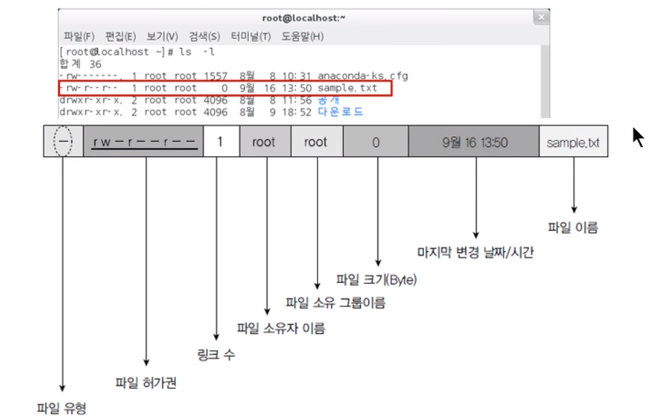

Linux 명령어
4.1
4.1.1 터미널/콘솔에서 시스템 종료 명령 실행
- poweroff
- shutdown -P now
P : poweroff (ex. shutdown -P +10 shutdown -r 22:00 은 각각 10분 후에 종료, 22시에 재부팅) - c : cancel (예약된 shutdown 취소)
- r : reboot
- k : 실제로 종료되지는 않지만, 종료된다고 다른 사용자에게 메시지 출력.
- halt -p
- init 0
cf) 가상 콘솔
- Ctrl + Alt + f1~6
4.1.5 런레벨
| 런레벨 | 영문 모드 | 설명 | 비고 |
|---|---|---|---|
| 0 | Power Off | 종료 모드 | |
| 1 | Rescue | 시스템 복구 모드 | 단일 사용자 모드 |
| 2 | Multi-User | 사용하지 않음 다만 호환성을 위해 3번과 동일한 것으로 취급 | |
| 3 | Multi-User | 텍스트 모드의 다중 사용자 모드 | |
| 4 | Multi-User | 사용하지 않음. 다만 호환성을 위해 3번과 동일한 것으로 취급 | |
| 5 | Graphical | 그래픽 모드의 다중 사용자 모드 | |
| 6 | Reboot |
- 런레벨 변경 실습
- 터미널에서 현재 설정된 런레벨 확인
1
2
3
4
5
6
7
8
9
10
11
12
13
14
15
16
17
# 1
$ cd
# 2 링크 파일 확인
$ ls -l /etc/systemd/system/default.target
## 결과 : /etc/systemd/system/default.target -> /lib/systemd/system/graphical.target ==> 그래픽 환경으로 부팅되는 것을 확인할 수 있다.
# 3 텍스트 모드로 런레벨 변경
$ ln -sf /lib/systemd/system/multi-user.target /etc/systemd/default.target
# 4 결과 확인
$ ls -l /etc/systemd/system/default.target
# 5 텍스트 모드에서 x윈도를 실행하려면
$ startx
# 6 다시 그래픽 환경으로 변경
$ ln -sf /lib/systemd/system/graphical.target /etc/systemd/system/default.target
4.1.6 자동 완성과 히스토리
- 자동 완성
- tab
- tab 두번 누를 경우 후보들 출력됨.
- 히스토리
- history : 기존에 사용했던 명령들 출력
- -c : 히스토리 삭제
- history : 기존에 사용했던 명령들 출력
vi editor
- 책 165, 166 참고
4.1.8 도움말 사용법
- man <명령어> : 명령어에 대한 메뉴얼 확인
- 종료 : q 입력
4.1.9 마운트와 CD/DVD/USB 활용
- 마운트된 장비 확인 : mount 입력
- 마운트 해제 : umount <장치명>
- cd : /dev/cdrom0
- 자동으로 마운트될 경우 /run/media/<사용자이름>/<CD/DVC의 라벨 이름>
4.2 리눅스 기본 명령어
- ls
- List의 약자로, 해당 디렉터리에 있는 파일의 목록을 나열한다.
- 사용 예
- ls [옵션] [파일]
1 2
$ ls -a /etc/sysconfig/a* #/etc/sysconfig 디렉터리에 있는 파일 목록 중 a로 시작하는 것을 출력.(-a : 숨김파일 포함)
- ls [옵션] [파일]
- pwd
- 현재 디렉터리의 전체 경로를 출력한다.
- rm
- remove의 약자로 파일이나 디렉터리를 삭제한다.
- 사용 예
- rm [옵션] [파일]
1 2 3 4
$ rm -i abc.txt #해당 파일 삭제. 삭제여부 확인 $ rm -f abc.txt #해당 파일 삭제. 삭제여부 확인하지 않음.(force) $ rm -r abc #해당 디렉터리 삭제.(recursive) $ rm -rf abc #abc 디렉터리와 그 아래에 있는 하위 디렉터리 모두를 강제로 전부 삭제.
- rm [옵션] [파일]
- cp
- copy의 약자로 파일이나 디렉터리 복사(새로 복사한 파일은 복사한 사용자의 소유가 됨. 읽기 권한 필요함)
- 사용 예
- cp [옵션] [파일]
1 2
$ cp abc.txt cba.txt : 파일 이름 변경하여 복사 $ cp -r abc cba : 디렉터리 복사
- cp [옵션] [파일]
- touch
- 크기가 0인 새 파일 생성하거나, 이미 파일이 존재한다면 파일의 최종 수정시간 변경
- mv
- move의 약자로, 파일이나 디렉터리의 이름을 변경하거나 다른 디렉터리로 옮김
- 사용 예
- mv [옮길 파일] [옮길 위치와 파일명]
- mkdir
- make directory의 약자로, 새로운 디렉터리 생성함. 명령 실행 사용자의 소유
- 사용 예
- mkdir [옵션] [디렉터리 경로 및 이름]
1 2
$ mkdir -p /dev/fgh # fgh 디렉터리 생성하는데, 만약 부모 디렉터리가 존재하지 않을 경우 생성.(parent)
- mkdir [옵션] [디렉터리 경로 및 이름]
- rmdir
- remove directory로서 디렉터리 삭제. 파일이 들어있는 디렉터리라면 rm -r 실행.
- cat
- concatenate의 약자로, 파일 내용을 화면에 보여줌. 여러 파일을 나열할 경우 파일을 연결해서 보여준다.
- head, tail
- 텍스트 형식으로 작성된 파일의 앞 10행 또는 마지막 10행만 화면에 출력한다.
- 사용 예
- head|tail [옵션] [파일명]
1
$ head -3 anaconda-ks.cfg # 앞 3행만 화면에 출력
- head|tail [옵션] [파일명]
- more
- 텍스트 형식으로 작성된 파일을 페이지 단위로 화면에 출력한다.
- 사용 예
- more [옵션] [파일명]
1 2
$ more +100 anaconda-ks.cfg # 100행부터 출력
- more [옵션] [파일명]
- less
- more과 비슷하지만 더 확장된 명령어.
- file
- 어떤 종류의 파일인지 표시.
4.3 사용자 관리와 파일 속성
4.3.1 사용자와 그룹
- 사용자 확인
1
2
3
4
5
6
7
$ cat /etc/passwd
#결과 포맷
#사용자 이름:암호:사용자 ID:사용자가 소속된 그룹 ID:전체 이름:홈 디렉터리:기본 셀
$ cat /etc/group
#결과 포맷
#그룹 이름:비밀번호:그룹 ID:그룹에 속한 사용자 이름
- useradd(또는 adduser) : 새로운 사용자 추가.
사용자 생성시 해당 사용자에 대해 새로운 홈 디렉터리가 지정되며(/home/사용자이름),
/etc/skel 디렉터리의 모든 내용을 사용자의 홈 디렉터리에 복사하는 작업이 발생한다. 따라서 생성되는 사용자에 특정 파일을 배포하고 싶을 경우 /etc/skel에 넣어두면 된다.1 2 3 4 5
$ useradd newuser #newuser 이름의 사용자 생성 $ useradd -u 1111 newuser #사용자 ID를 1111로 지정 $ useradd -g mygroup newuser #mygroup에 포함.mygroup 필요 $ useradd -d /newhome newuser #홈 디렉터리를 /newhome으로. $ useradd -s /bin/csh newuser #기본 셀을 /bin/csh로 지정.
- passwd : 사용자 비밀번호 지정 혹은 변경
- usermod : 사용자의 속성을 변경. 옵션은 useradd와 동일.
1
$ usermod -g root newuser # newuser 사용자의 그룹을 root 그룹으로 변경
- userdel : 사용자 삭제
1 2
$ userdel newuser $ userdel -r newuser #사용자 삭제와 함께 홈 디렉터리까지 삭제
- chage : 사용자 암호를 주기적으로 변경하도록 설정
1 2 3 4 5
$ chage -l newuser #newuser 사용자에 설정된 사항 확인 $ chage -m 2 newuser #newuser 사용자에 설정된 암호를 사용해야 하는 최소 일자(2일) $ chage -M 30 newsuer #bewuser 사용자에 설정된 암호를 사용할 수 있는 최대 일자(30일) $ chage -E 2026/12/12 newuser #암호가 만료되는 날짜 $ chage -W 10 newuser #암호 만료 전에 경고하는 기간(기본값 7). 암호 만료 10일 전부터 경고
- groups : 사용자가 소속된 그룹 보여준다.
1 2
$ groups #현재 사용자의 그룹 $ groups newuser #newuser의 그룹
- groupadd : 새로운 그룹 생성
1 2
$ groupadd newgrouop #newgroup 생성 $ groupadd -g 2222 newgroup #newgroup 생성하며 그룹 ID를 2222로 지정
- groupmod : 그룹의 속성 변경
1
$ groupmod -n mygroup newgroup #이름을 mygroup으로 변경
groupdel : 그룹 삭제(해당 그룹을 주요 그룹으로 지정한 사용자 없어야 함.)
- gpasswd : 그룹의 암호를 설정하거나 그룹 관리를 수행.
1 2 3 4
$ gpasswd newgroup $ gpasswd -A newuser newgroup #newuser 사용자를 newgroup 그룹의 관리자로 지정 $ gpasswd -a user1 newgroup #user1을 newgroup의 사용자로 추가 $ gpasswd -d newuser newgroup #newuser를 newgroup의 사용자에서 제거
4.3.2 파일과 디렉터리의 소유권과 허가권

파일 유형
d : 디렉터리
- : 일반 파일
b : 블록 디바이스
c : 문자 디바이스
l : 링크 파일파일 허가권
총 아홉자리로, 세 글자씩 끊어서
사용자의 읽기/쓰기/실행 권한(rwx) + 그룹 rwx + 그 외 사용자(Other)의 rwxchmod : 파일의 허가권을 변경하는 명령어
1
2
3
4
$ chmod 777 sample.txt #sample.txt를 모든 사용자가 읽고 쓰고 실행 가능
$ chmod u+x 파일이름 #상대적인 표현. 해당 파일에 대해 사용자에게 실행 권한 부여.
$ chmod g-x 파일이름 #해당 파일에 대한 그룹의 실행 권한 revoke
$ chmod o+rwx 파일이름 #그 외 사용자(others)에 대해 읽/쓰/실 허가
- chown : 파일의 소유권을 변경하는 명령어
1
2
3
4
5
$ chown 새로운사용자이름(.새로운그룹이름) 파일이름 #format
$ chown centos sample.txt #sample.txt의 소유자를 centos 사용자로 변경
$ chown centos.centosGroup sample.txt #사용자 뿐 아니라 파일의 그룹도 변경
$ chgrp centos sample.txt #그룹만 변경
4.4 리눅스 관리자를 위한 명령어
4.4.1 프로그램 설치를 위한 RPM
RPM은 레드햇 사에서 제작한 설치 파일이며, .rpm의 확장자명을 가지고 파일의 형식은
패키지이름-버전-릴리스번호.Centos버전.아키텍처.rpm이다.
자주 사용하는 rpm 명령어 옵션
설치
1
2
3
4
$ rpm -Uvh 패키지파일이름.rpm
# U : 기존의 패키지가 설치되지 않았다면 일반적인 설치를 진행하며, 설치되어있는 경우에는 업그레이드.
# v : 설치 과정 확인
# h : 설치 진행 과정을 # 기호로 화면에 출력
삭제
1
$ rpm -e 패키지이름 # (erase)
이미 설치된 패키지 조회
1
2
3
4
5
6
$ rpm -qa 패키지이름 # 시스템에 패키지가 설치되었는지 확인
$ rpm -qf 파일의절대경로 # 이미 설치된 파일이 어느 패키지에 포함된 것인지 확인
$ rpm -ql 패키지이름 # 특정 패키지에 어떤 파일들이 포함되어있는지 확인
$ rpm -qi 패키지이름 # 설치된 패키지의 상세 정보
# q : query
아직 설치되지 않은 rpm 파일 조회
1
2
$ rpm -qlp 패키지파일이름.rpm #패키지 파일에 어떤 파일들이 포함되었는지 확인
$ rpm -qip 패키지파일이름.rpm #패키지 파일의 상세 정보
DNF
rpm은 마운트된 cd, usb 혹은 rpm 파일이 있어야 하며, 의존성 관리가 되지 않았지만
dnf의 경우에는 원격 저장소로부터 패키지를 다운로드하고, 의존성 관리도 함께 해줌.
DNF의 기본 사용법
기본 설치 방법
1
$ dnf -y install 패키지이름
rpm 파일 설치 방법
1
$ dnf install rpm파일이름.rpm
업데이트 가능한 목록 보기
1
$ dnf check-update
업데이트
1
$ dnf update 패키지이름
삭제
1
$ dnf remove 패키지이름
정보 확인
1
$ dnf info 패키지이름
패키지 그룹 설치
1
$ dnf groupinstall 패키지그룹이름
패키지 리스트 확인
1
2
3
$ dnf list 패키지이름
$ dnf list httpd* #httpd 이름이 들어간 패키지 목록
$ dnf list available
특정 파일이 속한 패키지 이름 확인
1
$ dnf provides 파일이름 # 특정 파일이 어느 패키지에 들어있는지 확인 가능.
GPG 키 검사 생략
1
$ dnf install --nogpgcheck rpm파일이름.rpm
기존 저장소 목록 지우기
1
$ dnf clean all
4.4.3 파일 압축과 묶기
파일 압축
xz : 확장명 xz로 압축하거나 풀어줌.
1
2
3
4
$ xz 파일이름 #파일 이름을 압축 파일인 파일이름.xz로 만들며 기존 파일 삭제됨
$ xz -d 파일이름.xz #압축파일을 일반 파일로 만듬(Decompress)
$ xz -l 파일이름.xz #압축파일에 포함된 파일 목록과 압축률 등을 출력
$ xz -k 파일이름 #압축 후에 기존 파일을 삭제하지 않고 그대로 둠
bzip2/bunzip2 : 압축/압축해제
1
2
$ bzip2 파일이름
$ bunzip2 파일이름.bz2 #bzip2에 -d 옵션을 주는 것과 동일
gzip/gunzip
1
2
3
$ gzip 파일이름
$ gzip -d 파일이름.gz
$ gunzip 파일이름.gz
zip/unzip
1
2
$ zip 생성할파일이름.zip 압축할 파일이름
$ unzip 압축파일이름.zip
파일 묶기
tar
[동작]
- c(소) : 새로운 묶음을 만듦
- C(대) : 묶음을 풀 때 지정된 디렉터리에 압축을 풀어줌.
- x : 묶인 파일을 풀어줌
- t : 묶음을 풀기 전에 묶인 경로를 보여줌
[옵션]
- f(필수) : 묶음 파일 이름 지정.
- v : visual의 의미로서 파일이 묶이거나 풀리는 과정을 보여줌
- J(대) : tar + xz
- z(소) : tar + gzip
- j(소) : tar + bzip2
[사용 예]
1
2
3
4
5
6
7
8
9
10
$ tar cvf my.tar /etc/sysconfig/ #묶기
$ tar cvfJ my.tar.xz /etc/sysconfig/ #묶기 + xz 압축
$ tar cvfz my.tar.gz /etc/sysconfig/ #묶기 + gzip 압축
$ tar cvfj may.tar.bz2 /etc/sysconfig/ #묶기 + bzip2 압축
$ tar tvf my.tar #파일 확인
$ tar xvf my.tar #tar 풀기
$ tar cxvf newdir #newdir에 tar 풀기
$ tar xfJ my.tar.xz #xz 압축 해제 + tar 풀기
$ tar xfz my.tar.gz #gz 압축 해제 + tar 풀기
$ tar xfj my.tar.bz2 #bzip2 압축 해제 + tar 풀기
4.4.4 파일 위치 검색
find
[옵션]
- -name
- -user(소유자)
- -newer(전, 후)
- -perm(허가권)
- -size(크기)
[동작]
- -print(기본값)
- -exec(외부 명령 실행)
[기본 사용 예]
1
2
3
4
5
$ find /etc -name "*.conf" #etc 디렉터리 하위에 conf 확장자인 파일 검색
$ find /home -user centos #home 디렉터리 하위에 소유자가 centos인 파일 검색
$ find ~ -perm 644 #현재 사용자의 홈 디렉터리에 허가권이 644인 파일 검색
$ find /usr/bin -size +10k - size -100k # /usr/bin 디렉터리 하위에
# 파일 크기가 10KB~100KB인 파일 검색
[고급 사용 예]
1
2
3
4
5
6
7
8
9
# 현재 사용자의 홈 디렉터리 하위에 크기가 0인 파일의 목록을 상세히 출력
$ find ~ -size 0k -exec ls -l { } \;
# /home 디렉터리 하위에 swp 확장자인 파일 삭제
$ find /home -name "*.swp" -exec rm { } \;
# -exec는 외부 실행 명령의 시작을, \;는 끝을 의미하며
# { }에는 find의 실행 결과가 들어간다.
which 실행파일 이름 : PATH에 설정된 디렉터리만 검색. 절대 경로를 포함한 위치 검색.
whereis 실행파일 이름 : 실행 파일 및 소스, man 페이지 파일까지 검색.
locate 파일이름 : 파일 목록 데이터베이스에서 검색하기 때문에 매우 빠르고 유용하나, updatedb 명령을 1회 실행해야 사용할 수 있다.
4.5 네트워크 관련 설정과 명령어
nmtui
- 자동IP 주소 또는 고정 IP 주소 사용 결정
- IP 주소, 서브넷 마스크, 게이트웨이 정보 입력
- DNS 정보 입력
- 네트워크 카드 드라이버 설정
- 네트워크 장치 설정
systemctl start/stop/restart/status NetworkManager
- 네트워크 설정 변경 후 변경된 내용을 시스템에 적용시키는 명령어
- nmtui 혹은 네트워크 장치 설정 변경 후에는 restart 필수.(restart = stop + start)
ifup/ifdown 장치이름
- 장치를 작동시키거나 장치를 끄는 명령어
ifconfig 장치이름
- 해당 장치의 IP 주소와 관련 정보를 출력하는 명령어
nslookup
- DNS 서버의 작동을 테스트하는 명령어
예시
1
2
3
4
5
6
7
8
9
10
11
12
13
14
$ nslookup
> server
Default server: 168.126.63.1 #KT DNS Server
> www.naver.com
Server : 168.126.63.1
Address : 168.126.63.1#53
Non-authoritative answer:
www.naver.com canonical name = www.naver.com.nheos.com.
Name: www.naver.com.nheos.com
Address: 223.130.200.104
Name: www.naver.com.nheos.com
Address: 223.130.195.95
> exit
4.6 파이프, 필터, 리디렉션
파이프 : 명령어를 연결시키는 용도로 사용하며, |를 사용한다.
- 사용 예
1
$ ls -l /etc | more
필터 : 명령어 실행 결과에서 필요한 것만 걸러준다. grep, tail, wc, sort, awk, sed 등이 있음.
- 사용 예
1 2
$ ps -ef | grep bash #ps -ef의 결과 중 bash 들어간 것 필터링 $ rpm -qa | grep dnf
리디렉션 : 표준 입출력의 방향을 바꿔주는 역할. 키보드, 모니터가 아니라 파일을 이용하고 싶을 경우 사용.
- 사용 예
1
2
3
4
5
6
7
$ ls -l > list.txt #ls -l 의 결과를 list.txt에 덮어쓰기(Override)
$ ls -l >> list.txt #ls -l의 결과를 list.txt에 추가(Append)
$ sort < list.txt #list.txt 파일을 정렬하여 화면에 출력
$ sort < list.txt > out.txt #list.txt 파일을 정렬하여 out.txt에 출력
4.7 프로세스, 데몬, 서비스
cf) X 윈도는 firefox 등의 부모 프로세스이며 자식 프로세스는 부모 프로세스 종료시 함께 종료된다.
ps : 현재 프로세스의 상태를 확인. 다양한 옵션 있으며 대표적으로 -ef
kill : 프로세스 강제 종료. -9 옵션 사용시 무조건 종료
포그라운드 프로세스의 경우 Ctrl + c로 종료할 수 있으나, 백그라운드의 경우 kill 명령어 사용 필요.
pstree : 부모 프로세스와 자식 프로세스 트리 형태 출력
- 예제
1
2
3
4
5
6
7
8
9
10
11
12
13
$ yes > /dev/null #무한 루프 포그라운드 프로세스 생성
#Ctrl + Z => 일시정지
#[1]+ Stopped yes > /dev/null
$ bg #포그라운드 -> 백그라운드 전환
#[1]+ yes > /dev/null &
$ jobs #백그라운드 프로세스 확인
#[1]+ Running yes > /dev/null &
$ fg 1 #[1]은 작업번호로, 지정하여 포그라운드로 전환
#yes > /dev/null
#Ctrl + C # 종료
# 백그라운드 프로세스로 실행
$ tar xfJ my.tar.xz & # 모든 명령어 뒤에 &가 뒤에 붙으면 백그라운드로 실행
4.8 서비스와 소켓
서비스는 항상 가동되는 서버 프로세스이며, 소켓은 필요할 때만 작동하는 서버 프로세스이다. 둘 다 systemd라는 서비스 매니저 프로그램으로 관리한다.
4.8.1 서비스
서비스 실행 스크립트 파일은
/usr/lib/systemd/system/서비스이름.service경로 및 파일명을 가지고 있다.
systemctl : 서비스 시작/중지/재시작, 상태 확인, 사용/사용 안함 설정 등
1
2
3
$ systemctl start/stop/restart 서비스이름 #시작/중지/재시작
$ systemctl status 서비스이름 #상태 확인
$ systemctl enable/disable 서비스이름 #서비스 사용/사용 안 함 설정
4.8.2 소켓
서비스는 항상 가동되는 반면, 소켓은 외부에서 특정 서비스를 요청할 경우 systemd가 구동시킴. 요청 끝나면 소켓도 종료.
대표적인 소켓의 예로 텔넷 서버가 있음.
소켓 관련 스크립트 파일은 /usr/lib/systemd/system/소켓이름.socket